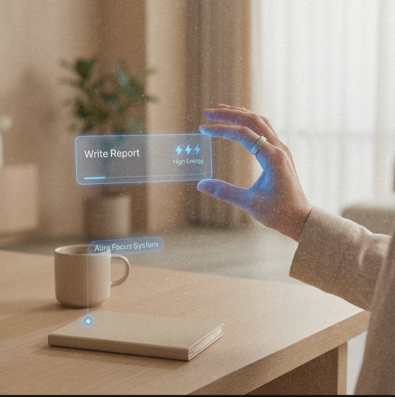
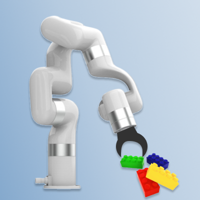

Aura Focus is an adaptive task management system that offers low-friction support for people who need help staying on track. It uses intuitive interactions, spatial cues, energy-based suggestions, and playful feedback to reduce cognitive load, strengthen daily competence, and foster a greater sense of connection. Read more...
Dental anxiety is prevalent among children, often leading to missed treatment and potential negative effects on their mental well-being. While several interventions (e.g., pharmacological and psychotherapeutic techniques) have been introduced for anxiety alleviation, the recently emerged virtual reality (VR) technology, with its immersive and playful nature, opened new opportunities for complementing and enhancing the therapeutic effects of existing interventions. Read more...

AI Movie Worker is a desktop application designed to enable users to create their own short films without requiring advanced video-making expertise. Targeting beginners with a foundational understanding of film-making, particularly those in related fields, the app simplifies the video production process. Read more...

Communication of failure is important for robots to reduce negative impact on people and to maintain collaboration. To accomplish this, we used body movements to facilitate failure recovery in robotic arm. We re-frame the failurerecovery process as the combination of attitude and behavior. Read more...